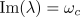
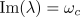
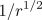
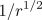
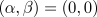
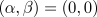

that undergoes a finite-wavelength instability as is
increased. Then, considering the growth of a Fourier mode
that undergoes a finite-wavelength instability as is
increased. Then, considering the growth of a Fourier mode  in the
linearised system,
the growthrate
in the
linearised system,
the growthrate  behaves as shown.
behaves as shown.
We consider here the conditions under which the complex Ginzburg-Landau equation arises. For simplicity we restrict attention to one spatial dimension; however, these results easily generalise to higher dimensions.
Let us consider a system with a control parameter
that undergoes a finite-wavelength instability as is
increased. Then, considering the growth of a Fourier mode in the
linearised system,
the growthrate behaves as shown.

For  ,
all modes are decaying so the
homogeneous state is stable. While, for
,
all modes are decaying so the
homogeneous state is stable. While, for  , a critical
wavenumber
, a critical
wavenumber  gains neutral stability and for
gains neutral stability and for
 , there is a narrow band of wavenumbers
around the critical value where the growthrate is slightly positive. (We also
define a critical wavefrequency .)
Now since the width of the unstable
wavenumber band is of order
, there is a narrow band of wavenumbers
around the critical value where the growthrate is slightly positive. (We also
define a critical wavefrequency .)
Now since the width of the unstable
wavenumber band is of order  , there can be slow
modulations over length scales of order .
, there can be slow
modulations over length scales of order .
Note that we have assumed that the instability is supercritical, meaning the nonlinearities saturate so that the realised patterns have small amplitude.
If  (at the critical wavenumber) then the unstable modes are growing in
time but stationary in space. Consequently, the resulting patterns take a
stationary form. To describe the patterns of the system, we separate the
dynamics into a fast component (varying over the original time and space
scales) and an envelope that varies slowly in space and time. Thus, close
to theshold, the dynamics can be described by
(at the critical wavenumber) then the unstable modes are growing in
time but stationary in space. Consequently, the resulting patterns take a
stationary form. To describe the patterns of the system, we separate the
dynamics into a fast component (varying over the original time and space
scales) and an envelope that varies slowly in space and time. Thus, close
to theshold, the dynamics can be described by

where  is a complex amplitude.
Now assuming the system is
invariant under translations ('gauge invariance') and enjoys a reflectional
symmetry, that is, the system is unchanged by the transformations:
is a complex amplitude.
Now assuming the system is
invariant under translations ('gauge invariance') and enjoys a reflectional
symmetry, that is, the system is unchanged by the transformations:

then, to leading-order, and after rescaling,
obeys the real Ginzburg-Landau equation (RGLE)

If  then the unstable
modes are of a travelling wave form. As before, we can separate the dynamics into
two components:
then the unstable
modes are of a travelling wave form. As before, we can separate the dynamics into
two components:

In this case, after rescaling, is governed by
the complex Ginzburg-Landau equation (CGLE)
where the parameters  and
and
 measure linear and nonlinear dispersion
(the dependence of the frequency of the waves on the wavenumber), respectively.
Of couse, the RGLE is simply a special case of the CGLE where .
measure linear and nonlinear dispersion
(the dependence of the frequency of the waves on the wavenumber), respectively.
Of couse, the RGLE is simply a special case of the CGLE where .
At this stage, several comments are in order:
 , the CGLE is
also applicable. Such instabilities are seen in oscillatory chemical reactions
and also lasers (or passive nonlinear optical systems). Very rarely are such
instabilities found in hydrodynamic systems due to the constraint of conservation
of mass.
, the CGLE is
also applicable. Such instabilities are seen in oscillatory chemical reactions
and also lasers (or passive nonlinear optical systems). Very rarely are such
instabilities found in hydrodynamic systems due to the constraint of conservation
of mass.